SMART TRAVELLERS APP
Back to ProjectsAbstract
The SMART TRAVELLERS APP (STA) is designed to simplify the travel of Public transport networks(PTNs) it is difficult to use when the user is unfamiliar with the area they are traveling. This is true for both infrequent users(including visitors)and regular users who need to travel to areas with which they are not acquainted. In these situations, adequate on-trip navigation information can substantially ease the use of public transportation and be the driving factor in motivating travelers to prefer it over other modes of transportation. However, estimating the localization of a user is not trivial, although it is critical for providing relevant information. we assess relevant design issues for a modular cost-efficient user-friendly on-trip Navigation service that uses position sensors .By helping travelers move to single-occupancy vehicles to public transportation systems, communities can reduce traffic congestion as well as its environmental impact. Here, we describe our efforts to increase the satisfaction of current public transportation users and help motivate more people to ride.
Objectives
Smart Travelers use, to track the college bus when it arrives at the student’s stop.To ensure that they don’t have to leave the confines of their comfort to travel.
Flutter
Flutter is a cross-platform software development framework that was presented by Google in 2015 and received its first release in May of 2017. Flutter nowadays has steadily grown and provided possibilities not only for iOS and Android mobile development but also for web and desktop applications as well. Let’s dive into the topic and try to understand why it is so popular nowadays.
Dart
Dart is an object-oriented programming language that was first unveiled by Google in 2011. Since then Dart steadily evolved by releasing different features. Among others, it is worth mentioning the “dart2native” feature that allows compiling it for Windows, Linux, and macOS platforms as a desktop application.
Simulation and Results
The app underwent testing with real users to analyze its performance. Below are images illustrating the results of a typical simulation.
Welcome screen of the application.
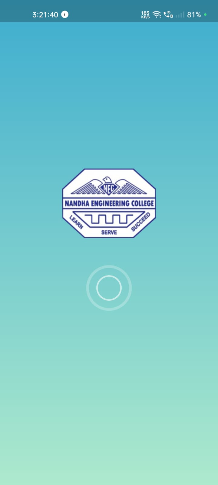Main Screen for Driver and Student Login
Driver can login with their credentials
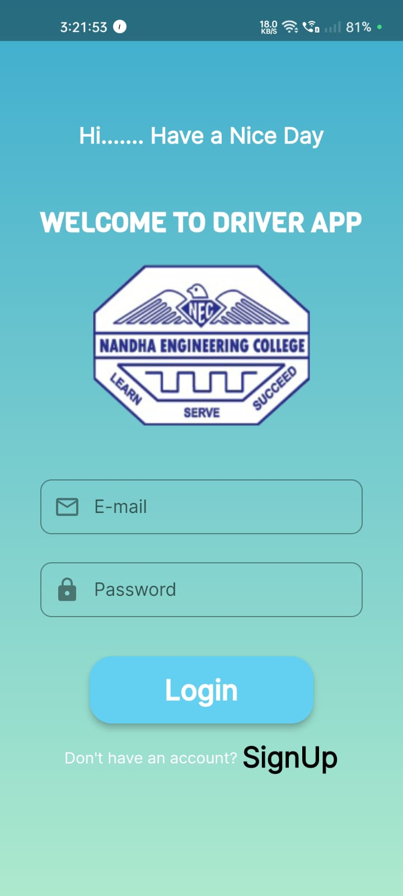Driver can register here
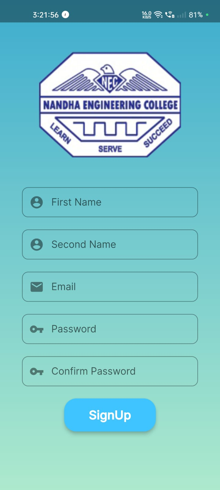Drivers Main page contains overall details
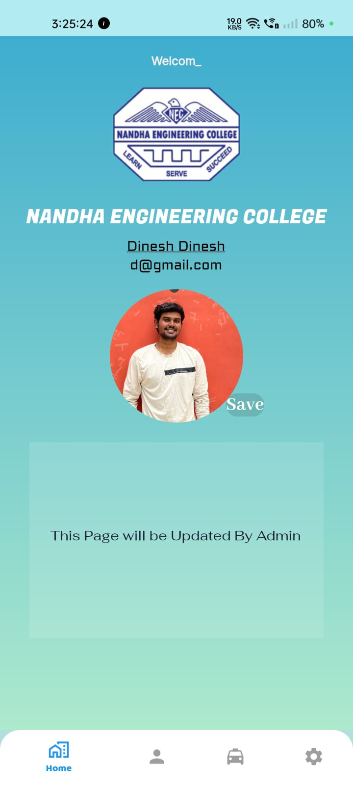Driver Location will enable & disable when the location Switched to ON or OFF
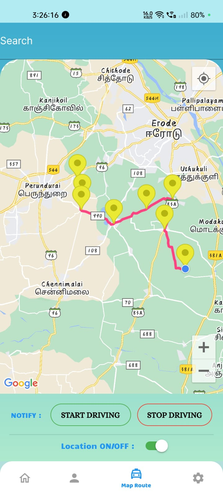Students Registered list will show here according to bus number or driver can manually register students
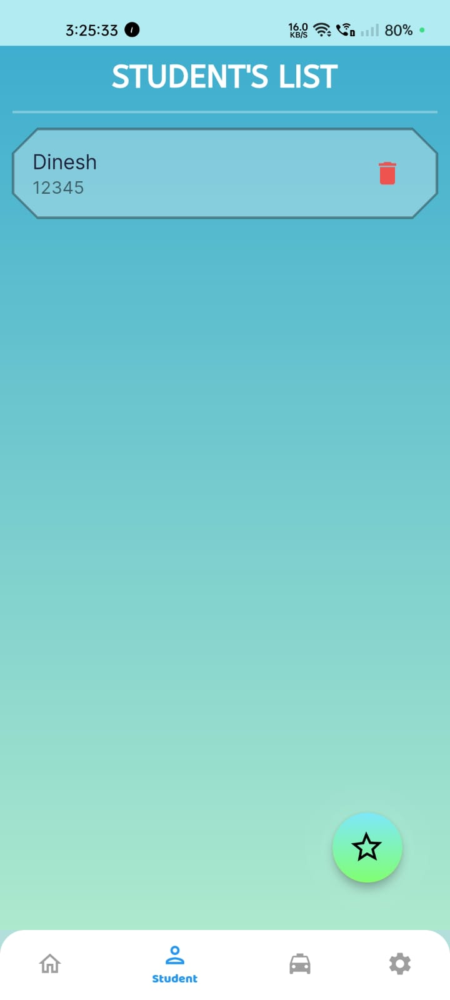When the driver is ready to start driving. He needs to click the “start driving” button. After pressing it starts to turn on GPS tracking the live location of the bus is shared to users.
When the driver reach to the destination, after clicking "Stop driving" driver's live location will be disabled.
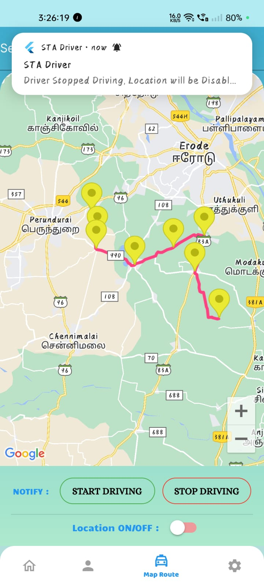Settings Page for both Driver and Student.
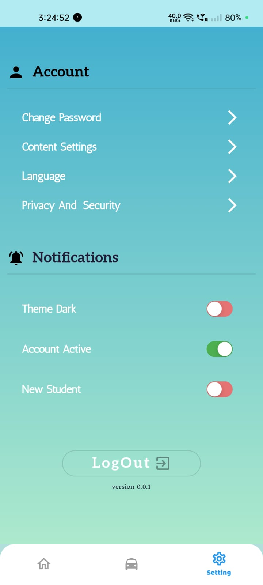Student can login with their credentials
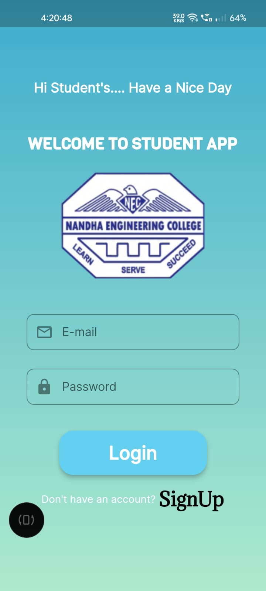Student Main page contains overall details
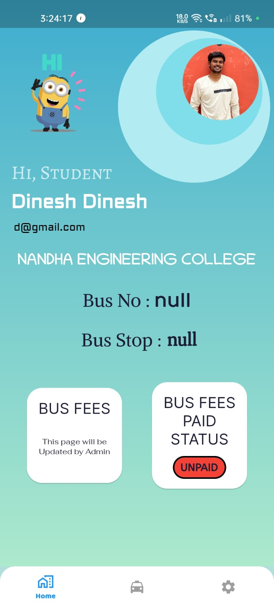It will automatically calculate the distance between the bus and the student and it shows the time & distance(km) of reaching the student's stop. When the bus arrives at the stop the location sharing will be stopped.
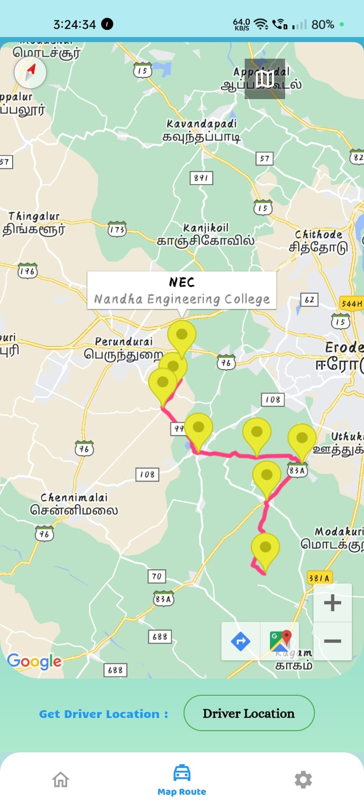When the driver presses the start button it will automatically generate the messages that start to share the live location of the bus and the notification will be sent to the student's mobile phones.
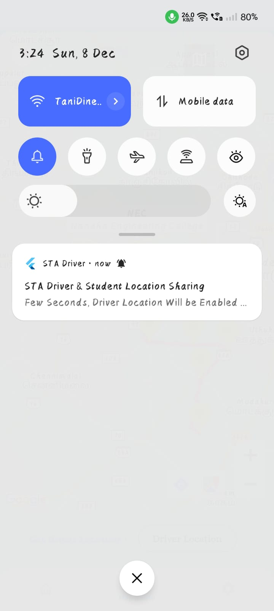Advantage
- Easy for Bus tracking.
- Time consuming and Simpler development at lower cost.
- Using a mobile app for this application can provide all kinds of things in maps such as hotels, cabs, events, etc. at once-place.
- Mobile apps provide better user experiences, load content faster, and are easier to use.
Application
- It is used in School and college bus.
- Easy to maintain the Student Bus Fees.
- We can use in both Public and Private transport services.
- The app will recommend local food options, roadside attractions, scenic stops and more
Conclusion
I have presented my dissertation on the value of BEST information systems, demonstrating a number of widely deployed tools and evaluations of those tools that show their utility. Specifically, I have described the system, which provides riders tools across a Smartphone and interfaces. I have demonstrated a real-time mobile trip planning tool and also a method for crowd-sourcing the detection of errors in public transit data. Finally, I have presented evaluations that show improves satisfaction with public transit, reduces wait times, increases transit usage, encourages walking, and improves perception of safety among riders. Sustainable urban mobility is a key factor for a citizen’s quality of life, as an increasingly larger amount of the population lives in urban areas. The integration and interoperability of different transport networks are seen in that document as a key feature for the improvement of urban mobility, together with improved travel information.
FUTURE IMPROVEMENT
Now this app is used for school and college in our next step to implement the public buses. The future will be a different and the most innovative for the passengers which we can see from the picture that how it would look in real. Artificial intelligence would be one of the technologies that would makes the technology more significant and better in the coming years and AI would provide huge technology in the same.